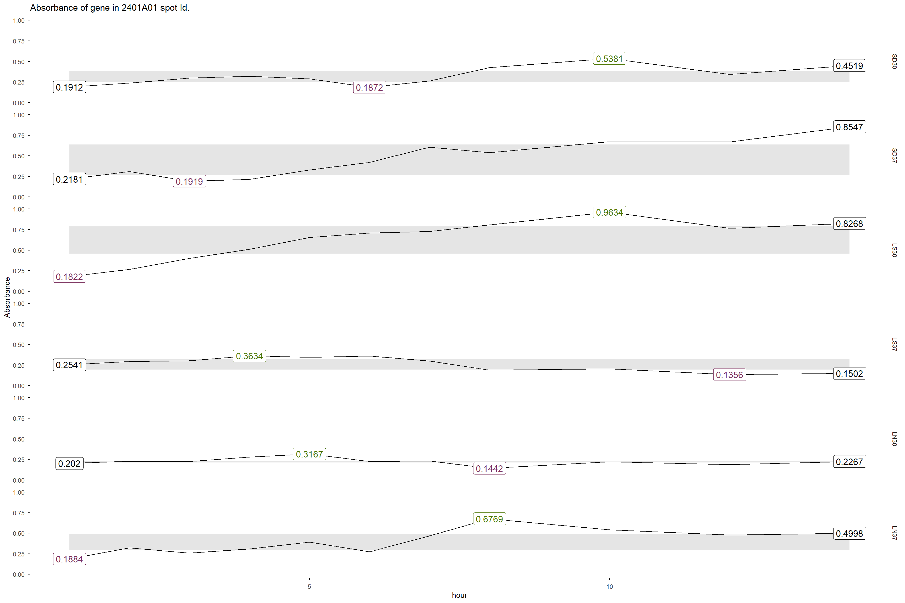

df_spark<-df_spark %>%
pivot_longer(cols = 3:8,
names_to="Condition",
values_to="Absorbance")
df_spark$Absorbance <- round(df_spark$Absorbance, digits = 4)
df_spark <- df_spark %>%
mutate(
Condition = factor(Condition, levels = c("SD30", "SD37", "LS30", "LS37", "LN30", "LN37"))
)Sparkline
spark <- df_spark %>%
filter(ver_pos == "2401A01") %>%
ggplot(aes(x=hour, y=Absorbance, group = Condition))+
stat_interquartilerange(geom = "ribbon",
show.legend = FALSE)+
geom_line()+
stat_sparklabels(geom = "label",
aes(size = 10),
show.legend = FALSE,
position = position_dodge(width = 0.01))+
scale_colour_manual("", values = c("black",
"#4E7705",
"#7D3560"))+
scale_y_continuous(limits = c(0,
1))+
facet_grid(Condition~.)+
ggtitle("Absorbance of gene in 2401A01 spot Id.")+
theme_minimal()+
theme(panel.grid = element_blank(),
axis.ticks = element_line()#,
#axis.title.x = element_blank(),
#axis.ticks.x = element_blank(),
#axis.text.x = element_blank()
)
spark
functional_spark <- Spark_table %>%
pivot_longer(
cols = 3:8,
names_to = "Condition",
values_to = "Absorbance"
)
functional_spark <- functional_spark %>%
mutate(
Condition_name = str_extract(Condition, "^[A-Za-z]+"),
Temp = str_extract(Condition, "[0-9]+$"),
Condition = NULL
)
spark_table <- functional_spark %>%
pivot_wider(
names_from = "Condition_name",
values_from = "Absorbance"
)
sparkline_data <- spark_table %>%
group_by(Temp, ver_pos) %>%
summarize(SD = list(SD),
LN = list(LN),
LS = list(LS),
.groups = "drop")
spark_table_inv <- functional_spark %>%
pivot_wider(
names_from = "Temp",
values_from = "Absorbance"
)
sparkline_inv <- spark_table_inv %>%
group_by(Condition_name, ver_pos) %>%
summarize("30" = list(`30`),
"37" = list(`37`),
.groups = "drop")years <- c("2401", "2402", "2403")
letters <- c("A", "B", "C", "D", "E", "F", "G", "H")
numbers <- sprintf("%02d", 01:12)
all_levels <- character()
for ( year in years) {
for (letter in letters) {
for (number in numbers) {
level <- paste0(year, letter, number)
all_levels <- c(all_levels, level)
}
}
}
cat("First Level (Start of sequence):", all_levels[1], "\n") First Level (Start of sequence): 2401A01 # The last element confirms the end point: 2403H12
cat("Last Level (End of sequence):", all_levels[length(all_levels)], "\n")Last Level (End of sequence): 2403H12 sparkline_data <- sparkline_data %>%
mutate(
ver_pos = factor(
ver_pos,
levels = all_levels,
ordered = TRUE
),
) %>%
arrange(ver_pos)
sparkline_inv <- sparkline_inv %>%
mutate(ver_pos = factor(
ver_pos,
levels = all_levels,
ordered = TRUE),
Condition_name = factor(
Condition_name,
levels = c("SD", "LS", "LN"))) %>%
arrange(ver_pos, Condition_name)gt_sparklin_data <- sparkline_data %>%
gt() %>%
gt_plt_sparkline(column = c("LS")) %>%
gt_plt_sparkline(column = c("SD")) %>%
gt_plt_sparkline(column = c("LN"))
target_ids <- c("2401A01", "2401A02", "2401A03", "2401A04", "2401A05", "2401A06", "2401A07", "2401A08", "2401A09", "2401A10", "2401A11", "2401A12")
gt_sparklin_small <- sparkline_data %>%
filter(ver_pos %in% target_ids) %>%
gt() %>%
gt_plt_sparkline(column = c("LS")) %>%
gt_plt_sparkline(column = c("SD")) %>%
gt_plt_sparkline(column = c("LN"))gt_sparkline_inv <- sparkline_inv %>%
gt() %>%
gt_plt_sparkline(column = c("37")) %>%
gt_plt_sparkline(column = c("30"))
gt_invspark_small <- sparkline_inv %>%
filter(ver_pos %in% target_ids) %>%
gt() %>%
gt_plt_sparkline(column = c("30")) %>%
gt_plt_sparkline(column = c("37"))gtsave(
data = gt_sparklin_data,
filename = "sparkline_table.png"
)
gtsave(
data = gt_sparklin_small,
filename = "sparktable_small.png"
)
gtsave(
data = gt_sparkline_inv,
filename = "sparkline_inv.png"
)
gtsave(
data = gt_invspark_small,
filename = "invspark_small.png"
)